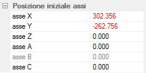

Avvertenza: a lavorazione iniziata, la modifica della posizione iniziale degli assi XY è inefficace e pericolosa.

Le posizioni X Y Z sono espresse in millimetri.
Per macchine che dispongono degli assi di rotazione A B C, indicare l’angolo iniziale espresso in gradi e millesimi di grado.
La casella B non è accessibile se il CN non prevede l’uso di questo asse.